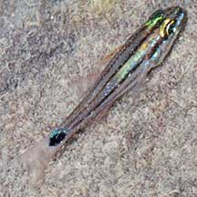
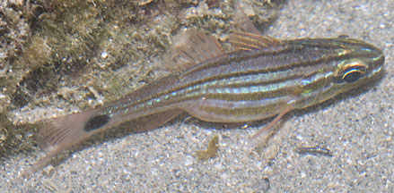
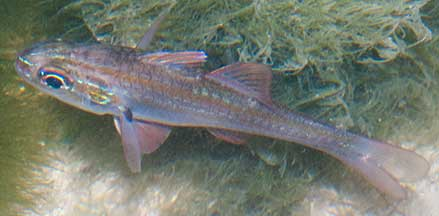
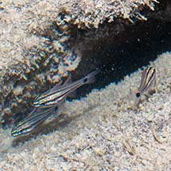

|
|
| fishes text index | photo index |
| Phylum Chordata > Subphylum Vertebrate > fishes > Family Apogonidae |
| Candystripe
cardinalfish Ostorhinchus endekataenia* Family Apogonidae updated Sep 2020 Where seen? This fish in pajamas is sometimes seen on our Southern shores in pools among coral rubble and reefs. More active at night. It was previously known as Apogon endekataenia. Features: To about 14cm, those seen about 5-7cm. Body slender pale. 6 red or brown lines with a large black spot at the base of the tail fin. |
 Tanah Merah, May 11 |
 Tanah Merah, Aug 11 |
 Pulau Tekukor, May 10 |
 Tanah Merah, Apr 12 |
*Species are difficult to positively identify without close examination.
On this website, they are grouped by external features for convenience of display.
| Candystripe cardinalfishes on Singapore shores |
On wildsingapore
flickr
|
Links
|